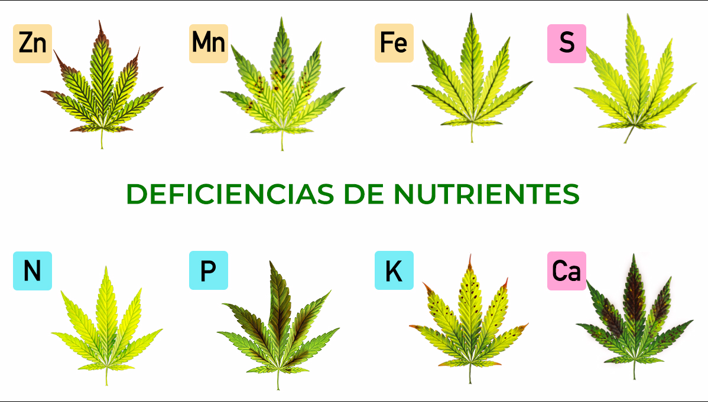

Tabla de Deficiencias
Introducción
El cultivo indoor ofrece un control significativo sobre el entorno, pero aun así, las plantas pueden enfrentar diversos problemas. Esta guía te ayudará a identificar y resolver las deficiencias nutricionales, enfermedades y plagas más comunes.
Parte I: Deficiencias Nutricionales
Las deficiencias nutricionales son problemas frecuentes que afectan el desarrollo y la productividad de las plantas. Aprender a identificarlas es crucial para mantener plantas saludables.
Deficiencias de Macronutrientes
Nitrógeno (N)
- Síntomas: Amarillamiento de hojas viejas (inferiores) que avanza hacia arriba. Crecimiento lento, tallos delgados.
- Solución: Aplicar fertilizante rico en nitrógeno. En fase vegetativa, usar fertilizantes con ratio NPK alto en N.
- Nota: El exceso causa crecimiento exuberante pero débil y retrasa la floración.
Fósforo (P)
- Síntomas: Crecimiento lento, tallos púrpuras o rojos, manchas oscuras en hojas que se vuelven amarillas y se caen.
- Solución: Aplicar fertilizante rico en fósforo, especialmente durante la floración.
- Nota: Un pH bajo puede bloquear su absorción.
Potasio (K)
- Síntomas: Puntas y bordes de hojas amarillos/marrones, hojas que se curvan hacia arriba, entrenudos más largos.
- Solución: Suplementos de potasio o fertilizantes para floración.
- Nota: Fundamental para el desarrollo de cogollos.
Deficiencias de Nutrientes Secundarios
Calcio (Ca)
- Síntomas: Hojas nuevas deformes, puntas ganchudas, manchas necróticas, muerte de puntos de crecimiento.
- Solución: Cal agrícola, suplementos de calcio o cal-mag.
- Nota: Común en cultivos con agua osmotizada.
Magnesio (Mg)
- Síntomas: Amarillamiento entre las venas de hojas viejas, que avanza hacia el centro.
- Solución: Sulfato de magnesio (sales Epsom), cal-mag.
- Nota: Muy común en cultivos con coco.
Azufre (S)
- Síntomas: Amarillamiento uniforme de hojas nuevas, crecimiento ralentizado.
- Solución: Fertilizantes que contengan azufre o sulfato de magnesio.
- Nota: Poco común, pero más frecuente en medios inertes.
Deficiencias de Micronutrientes
Hierro (Fe)
- Síntomas: Amarillamiento entre venas de hojas nuevas, mientras las venas permanecen verdes.
- Solución: Quelatos de hierro, correctores de micronutrientes.
- Nota: Suele deberse a pH alto.
Zinc (Zn)
- Síntomas: Acortamiento de entrenudos, hojas retorcidas, manchas cloróticas.
- Solución: Correctores de microelementos.
- Nota: El exceso de fósforo puede provocar su deficiencia.
Manganeso (Mn)
- Síntomas: Manchas amarillas entre venas en hojas nuevas, con manchas necróticas.
- Solución: Correctores de microelementos.
- Nota: Similar a la deficiencia de hierro pero con manchas necróticas.
Boro (B)
- Síntomas: Puntas de crecimiento muertas, hojas nuevas deformes y quebradizas.
- Solución: Correctores de microelementos o ácido bórico muy diluido.
- Nota: Poco común, pero devastador si ocurre.
Cobre (Cu)
- Síntomas: Hojas nuevas de color azul-verdoso, marchitas o retorcidas.
- Solución: Correctores de microelementos.
- Nota: Rara vez ocurre en cultivos indoor.
Molibdeno (Mo)
- Síntomas: Hojas que se vuelven amarillas desde los bordes hacia adentro.
- Solución: Correctores de microelementos.
- Nota: Muy poco común.
Parte II: Enfermedades Fúngicas
Oídio (Powdery Mildew)
Síntomas:
- Manchas blancas polvorientas en hojas, que se expanden hasta cubrir toda la superficie.
Prevención:
- Buena circulación de aire
- Niveles de humedad moderados (45-55%)
Tratamiento:
- Fungicidas a base de azufre
- Bicarbonato de potasio
- Aceites de neem
Nota: Muy contagioso y difícil de erradicar completamente.
Botrytis (Moho gris)
Síntomas:
- Moho gris-marrón, especialmente en cogollos
- Pudrición desde dentro
Prevención:
- Humedad por debajo del 50% durante floración
- Buena ventilación
Tratamiento:
- Eliminar partes afectadas
- Fungicidas preventivos
Nota: Muy destructivo durante la floración tardía.
Fusarium
Síntomas:
- Marchitamiento rápido
- Cambio de color en el tallo (marrón-rojizo)
- Raíces podridas
Prevención:
- Sustrato limpio
- No sobrerregar
- Buen drenaje
Tratamiento:
Muy difícil de tratar. Eliminar plantas afectadas por completo.
Nota: Puede permanecer en el ambiente durante años.
Pythium (Pudrición de raíz)
Síntomas:
- Crecimiento lento
- Marchitamiento
- Raíces marrones y blandas
Prevención:
- Buena oxigenación del sustrato/solución
- Temperaturas adecuadas
Tratamiento:
- Oxigenar sustrato
- Productos a base de Trichoderma
- Peróxido de hidrógeno diluido
Nota: Común en sistemas hidropónicos.
Alternaria
Síntomas:
- Manchas concéntricas oscuras en hojas
- Generalmente con un halo amarillo
Prevención:
- Evitar mojar las hojas
- Buena ventilación
Tratamiento:
- Fungicidas cúpricos
- Fungicidas sistémicos
Nota: Afecta principalmente a plantas debilitadas.
Parte III: Enfermedades Virales y Bacterianas
Mosaico del tabaco (TMV)
Síntomas:
- Moteado amarillo en hojas
- Deformaciones
- Crecimiento retardado
Prevención:
- Higiene estricta
- No fumar cerca de plantas
Tratamiento:
No existe cura. Eliminar plantas afectadas.
Nota: Transmitido por contacto, muy persistente.
Bacteriosis
Síntomas:
- Manchas acuosas que se vuelven necróticas
- Olor desagradable
Prevención:
- Buena ventilación
- Evitar alta humedad
Tratamiento:
- Productos a base de cobre
- Eliminar partes afectadas
Nota: Menos común en indoor que las enfermedades fúngicas.
Parte IV: Plagas Comunes
Ácaros (Araña roja)
Síntomas:
- Punteado fino amarillo en hojas
- Telarañas finas en casos avanzados
Prevención:
- Humedad adecuada (los ácaros prefieren ambientes secos)
- Inspecciones regulares
Tratamiento:
- Acaricidas específicos
- Aceite de neem
- Depredadores naturales como Phytoseiulus persimilis
Ciclo de vida: 7-14 días, reproducción muy rápida a altas temperaturas.
Nota: La plaga más temida por cultivadores indoor debido a su resistencia y difícil erradicación.
Trips
Síntomas:
- Manchas plateadas en hojas
- Excrementos negros
- Deformación de hojas nuevas
Prevención:
- Trampas cromáticas azules
- Inspecciones regulares
Tratamiento:
- Spinosad
- Aceite de neem
- Depredadores como Amblyseius cucumeris
Ciclo de vida: 15-30 días, parte del ciclo ocurre en el sustrato.
Nota: Pueden transmitir virus.
Mosca blanca
Síntomas:
- Pequeños insectos blancos bajo las hojas
- Melaza y fumagina (moho negro)
Prevención:
- Trampas cromáticas amarillas
- Inspecciones regulares
Tratamiento:
- Jabón potásico
- Aceite de neem
- Parasitoides como Encarsia formosa
Ciclo de vida: 25-50 días según temperatura.
Nota: Menos agresiva que ácaros pero igualmente problemática.
Pulgones
Síntomas:
- Insectos pequeños (verdes, negros o marrones) agrupados
- Hojas pegajosas
- Deformaciones
Prevención:
- Inspecciones regulares
- Control de hormigas
Tratamiento:
- Jabón potásico
- Aceite de neem
- Insecticidas sistémicos
- Depredadores como Aphidius
Ciclo de vida: Muy rápido, pueden reproducirse sin fertilización.
Nota: Más comunes en cultivos con acceso al exterior.
Cochinillas
Síntomas:
- Insectos ovalados con caparazón ceroso blanco o marrón
- Melaza
Prevención:
- Inspecciones regulares
- Cuarentena de plantas nuevas
Tratamiento:
- Alcohol isopropílico
- Aceite de neem
- Insecticidas sistémicos
Ciclo de vida: 40-80 días según especies.
Nota: Difíciles de erradicar por su caparazón protector.
Mosquitos del sustrato (Fungus gnats)
Síntomas:
- Pequeñas moscas negras volando alrededor
- Larvas en el sustrato
Prevención:
- No sobrerregar
- Capa de sustrato seco en superficie
Tratamiento:
- Trampas amarillas
- Bacillus thuringiensis israelensis (BTI)
- Nematodos
Ciclo de vida: 17-30 días.
Nota: Las larvas dañan las raíces, no los adultos.
Orugas
Síntomas:
- Agujeros irregulares en hojas
- Excrementos
- Capullos
Prevención:
- Inspecciones regulares
- Sellado completo de la sala
Tratamiento:
- Bacillus thuringiensis kurstaki (BTK)
- Remoción manual
Ciclo de vida: Variable según especies.
Nota: Poco comunes en indoor completamente sellado.
Recuerda: La prevención es siempre mejor que el tratamiento. Mantén un ambiente limpio y controlado, y realiza inspecciones regulares para detectar problemas temprano.